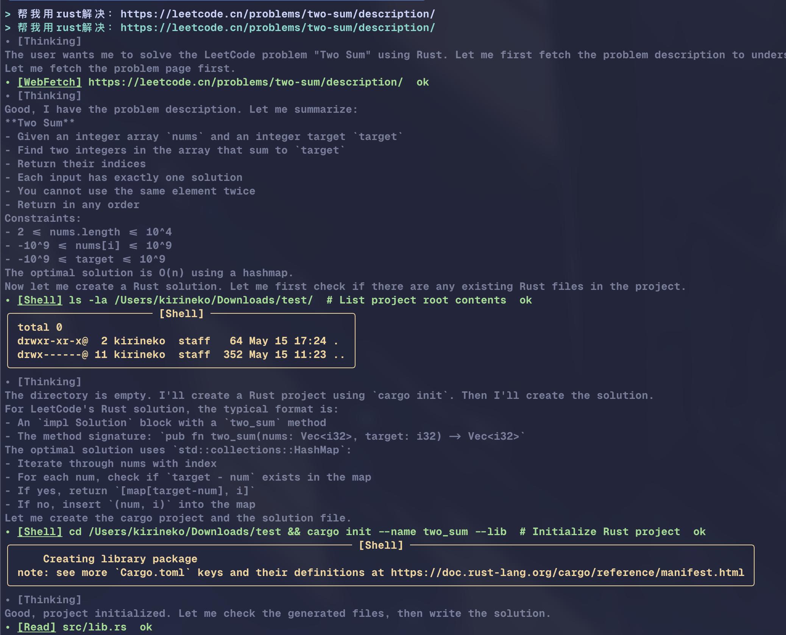
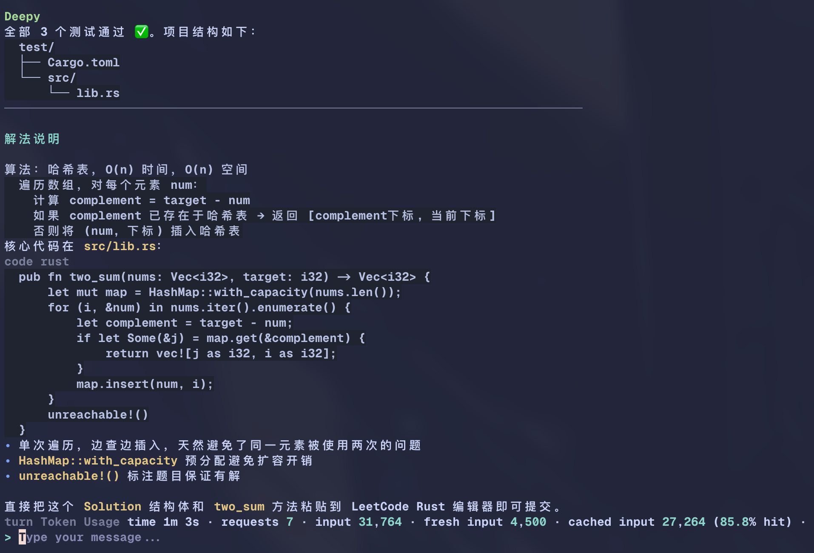
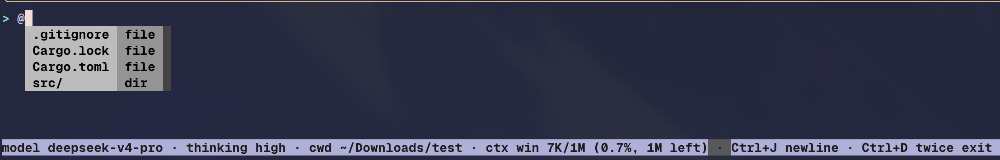
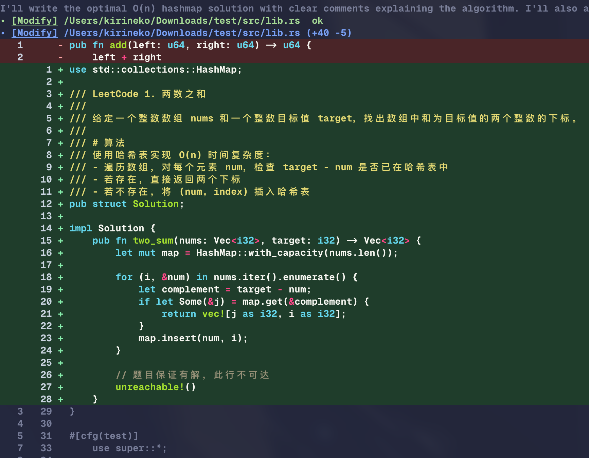
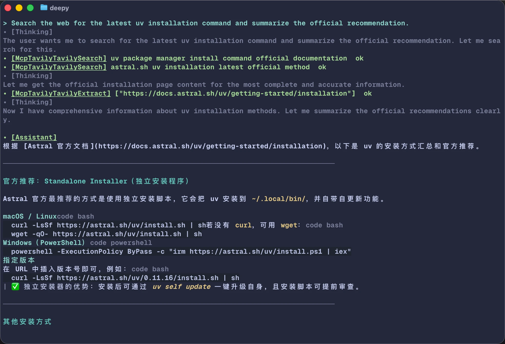
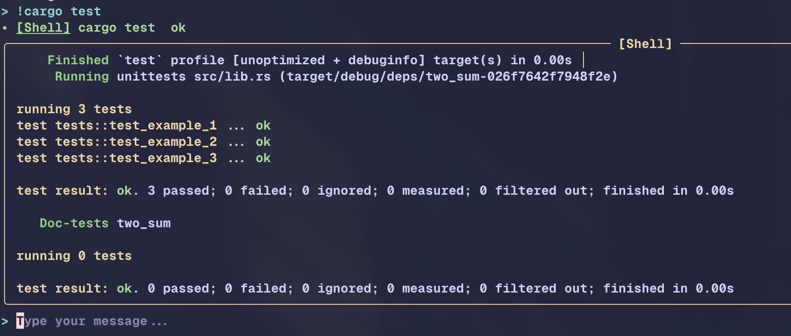
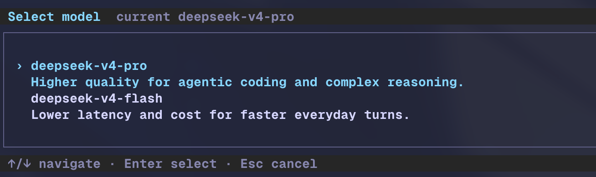
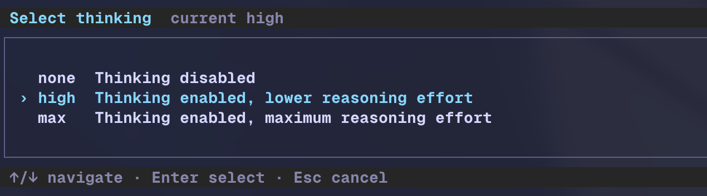

DeepSeek-first 模型体验
默认面向 `deepseek-v4-pro` 和 thinking 模式设计，`/model` 可切换 V4 Pro / V4 Flash，并选择 `none`、`high`、`max` thinking 强度。
为 DeepSeek 设计的终端编程 Agent。让模型在同一个项目会话里读代码、改文件、 运行命令、检索网页、管理长上下文，并把每一步工具行为清楚地显示给你。
Deepy 不把工具调用藏在对话后面。模型的 thinking、文件 diff、shell 输出、 上下文状态、会话恢复和本地命令都会成为可见、可追溯、可继续的终端记录。
默认面向 `deepseek-v4-pro` 和 thinking 模式设计，`/model` 可切换 V4 Pro / V4 Flash，并选择 `none`、`high`、`max` thinking 强度。
Read、Write、Modify 使用同一套路径校验、旧内容校验和可读 diff 展示，降低 Agent 误改文件后不可察觉的风险。
模型可通过 shell 工具运行验证；用户也可以在输入框直接使用 `!cmd` 执行本地 非交互命令，输出会写入上下文供下一轮模型使用。
需要最新信息时可搜索网页；已有 URL 时用 WebFetch 抽取页面正文、标题和 metadata，让终端会话可以带来源地研究问题。
Deepy 记录 Context Window 使用情况，支持自动 compact 和 `/compact` 手动压缩， 用摘要替换旧历史并保留近期上下文。
POSIX shell、PowerShell、cmd 使用各自命令方言；Windows 路径、UTF-8 输出、 CRLF 编辑和 pywinpty 本地命令都有专门处理。
欢迎页、状态栏、工具标签、thinking 输出和结果面板都围绕“当前模型在做什么、 用了什么工具、上下文还剩多少”组织。



从理解项目、修改文件、联网研究到本地命令和模型设置，Deepy 的功能都直接围绕 真实编码会话设计。

Modify 工具显示整行 diff、语法高亮和路径信息，用户能快速确认 Agent 的文件改动。

WebSearch 查找资料，WebFetch 精确读取 URL，适合查文档、版本信息和来源页面。

用户清楚自己要执行什么时，可直接把命令交给当前 shell，输出仍进入上下文。

`/model` 通过键盘选择模型和 thinking 强度，避免重复手写配置。

`none`、`high`、`max` 对应不同推理成本和深度，适合在速度与质量之间切换。
Compact、session history、theme、Windows 适配和项目规则并不是展示层功能， 但它们决定 Deepy 在真实项目中的连续性、可恢复性和跨平台稳定性。
第一次使用时只需要完成安装、配置 DeepSeek API key，然后在项目目录启动 Deepy。
交互式设置 API key、模型和 UI 主题。
deepy config setupDeepy 会以当前目录作为项目根目录，读取本地规则、skills 和 session。
cd your-project
deepy命令都在终端输入框中使用。
/model 选择模型和 thinking 强度
/resume 恢复历史会话
/compact 压缩当前上下文
/theme 切换 UI 主题
@src/app.py 引用项目文件
!pytest -q 本地执行非交互命令推荐通过 `uv tool` 安装。Deepy 的 Python 包名是 `deepy-cli`，安装后的命令是 `deepy`。
# macOS / Linux
curl -LsSf https://astral.sh/uv/install.sh | sh
# Windows PowerShell
powershell -ExecutionPolicy ByPass -c "irm https://astral.sh/uv/install.ps1 | iex"Linux / macOS: `~/.config/uv/uv.toml`
[[index]]
url = "https://mirrors.tuna.tsinghua.edu.cn/pypi/web/simple/"
default = trueWindows: `%AppData%\uv\uv.toml`
[[index]]
url = "https://mirrors.tuna.tsinghua.edu.cn/pypi/web/simple/"
default = trueuv tool install deepy-clideepy config setup
cd your-project
deepy